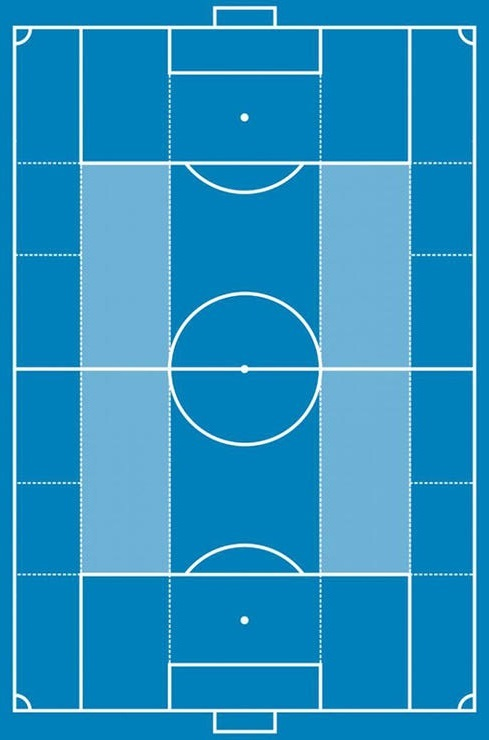

Women's Club Soccer

Standard pitch divided into zones with half-spaces highlighted light blue

- No more than 2 players should be in any vertical zone, and no more than 3 players should be in any horizontal line
- If a player moves from any wide block, another player must enter a wide block on that side
- Always occupy the left and right half-spaces (highlighted light blue)
- When the goalkeeper has possession, 'open up' and occupy at least 4 wide blocks
- When possible, no pass should be made to a teammate in the same zone
- Create small triangles, overload the opposition, and create space by drawing defenders out of position